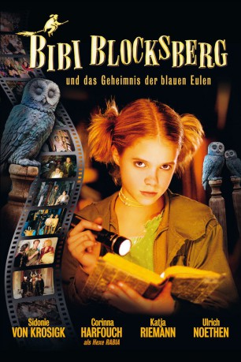

#5861 Bibi Blocksberg und das Geheimnis der blauen Eulen
 gesehen am 14.04.2017
gesehen am 14.04.2017
 
 IMDB-Wertung: 5.4 / 10
IMDB-Wertung: 5.4 / 10  Metascore: 0
Metascore: 0 
Bibi Blocksberg droht wegen schlechter Schulleistunge nicht versetzt zu werden. Deshalb stecken sie ihre Eltern in den Ferien in das Büffelinternat Schloss Altenberg, wo Bibi den sonderlichen Schuldirektor Prof. Bartels kennenlernt. Mit Elea, einem traurigen Mädchen im Rollstuhl, freundet sich Bibi schnell an. Doch der ins Gruselmoor verbannten Hexe Rabia gelingt die Flucht. Sie beginnt einen Rachefeldzug gegen die Blocksbergs.
Jahr: 2004
Dauer: 108 Minuten
FSK: 0
Land: Deutschland Studio: Constantin FilmTonspuren: DD2.0 - ,
Untertitel:
Auflösung: 1080p (1920x1080) Größe: 4433 MB
Genre: Fantasy, Familie
Regisseur: Franziska Buch
Drehbuch: Sameer Asad Gardezi
Soundtrack:
Darsteller:
 Corinna Harfouch als Rabia
Corinna Harfouch als Rabia Katja Riemann als Barbara Blocksberg
Katja Riemann als Barbara Blocksberg Ulrich Noethen als Bernhard Blocksberg
Ulrich Noethen als Bernhard Blocksberg Edgar Selge als Quirin Bartels
Edgar Selge als Quirin Bartels Nina Petri als Tante Lissy
Nina Petri als Tante Lissy Frederick Lau als David
Frederick Lau als David- Henning Vogt als Herr Hulkovic
- Stephen Sikder als (uncredited
- Sidonie von Krosigk als Bibi Blocksberg
- Marie Luise Stahl als Elea
- Monica Bleibtreu als Walpurgia
- Anja Sommavilla als Schubia
- Elea Geissler als Arkadia
- Elisa Becker als Carina
- Theresa Schwierske als Sarah
- Danne Hoffmann als Frau Jahn
- Lupe Linthe als Rufus
- Walter Nickel als Dr. Fröhlich
- Edeltraud Schubert als Alte Hexe
- Roland Jaeger als Vater Elea
- Kerstin Feuerer als Mutter Elea
- Carlotta Luisa Rausch als Elea 5-jährig
- Rhoda Kaindl als Mutter Carina
- Florian Beck als Rafting Kind
- Martin Gartner als Rafting Kind
- Stefanie Hauk als Rafting Kind
- Johanna Kink als Rafting Kind
- Fabian Lösch als Rafting Kind
- Martin Mittner als Rafting Kind
- Philip Pottenstein als Rafting Kind
- Monika Waltl als Rafting Kind
- Rufus Beck als Kater Maribor
- Julia Neuhaus als Hexe
- Daniela Rodler als Hexe
- Michael Rossié als (uncredited
Datei: X:\Kinder Collections\Bibi & Tina\Bibi Blocksberg und das Geheimnis der blauen Eulen (2004, FSK0, 1920x1080).mkv seit 30.03.2017
Festplatte: Kinder-Filme+Trick
 Es gibt insgesamt 9 Filme in der Gruppe 'Kinder Collections\Bibi & Tina'
Es gibt insgesamt 9 Filme in der Gruppe 'Kinder Collections\Bibi & Tina'